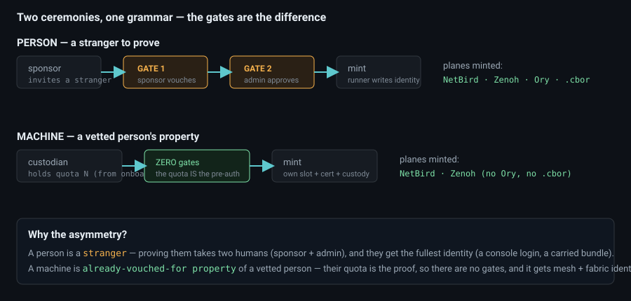
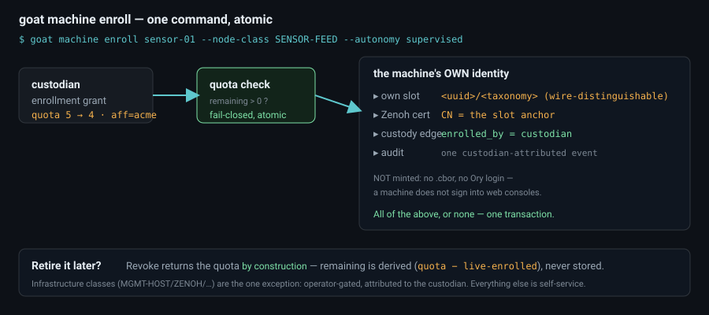
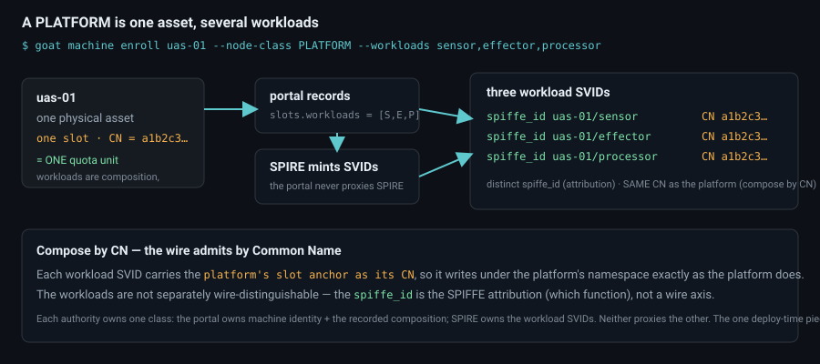

How the goat fabric gives a person, a headless sensor, and a drone-that-decomposes-into-workloads their identities — two ceremonies under one grammar, and the one idea (asymmetric gates) that makes them coherent.
Onboarding is not "create an account." It is: give an entity a cryptographic identity across the planes it needs, place it in the registry under its unit, stamp it with the grammar, and record who brought it online. There are two kinds of principal — a person and a machine — and they run sibling ceremonies. Same grammar, same registry, different gates. That difference is the whole story.

A person has no identity yet and no one has vouched for them, so the person flow spends two human gates — a sponsor vouches, then an admin approves — and no single actor both invites and admits. A machine is different: it is the property of a person who was already proved through those two gates, so re-proving it would be theatre. Instead, that person carries a machine quota — a standing authorization to bring their own machines online. The quota is the gate.

goat machine enroll mints the machine's own identity — or nothing at all — in one transaction.<uuid>/<taxonomy> slot — the thing that makes it wire-distinguishable — and mints a Zenoh cert whose CN is that slot anchor.enrolled_by), decrements the quota, and writes one custodian-attributed audit event..cbor bundle, no Ory login. A machine gets mesh + fabric identity only.quota − live-enrolled), never stored. Infrastructure classes
(MGMT-HOST, ZENOH, …) are the one exception — they shape the goatnet
itself, so they stay operator-gated, attributed to the custodian.
You declare the composition at enroll (--workloads sensor,effector,processor).
The portal records it as a born-as attribute on the machine; SPIRE mints the
actual per-workload SVIDs. Each authority owns one identity class and neither proxies the
other. Every workload SVID carries the platform's slot anchor as its CN — so it
composes under the platform's namespace exactly as the platform does (compose by CN) —
while its distinct spiffe_id = <platform>/<function> is the SPIFFE
attribution that separates sensor from effector.
Onboarding recorded who enrolled what. Three surfaces read that edge back, read-only:
| surface | shows |
|---|---|
| goat machine ls | the fleet (operator) or your own machines — node-class / autonomy / (platform) workloads + remaining quota |
| goat access who <id> | an identity's custodied machines, in the Data-Access COP |
| goat who | the full-screen identity browser; the detail pane's CUSTODY section shows the same edge |
The fabric finds itself by identity. A principal's cert + custody edge come before any capability; access is derived from identity, never the reverse.
Immutable facts about what a principal was minted as live in the cert; mutable facts about what it currently is live in the registry. A sensor is born a sensor; a unit that changes on reorg is currently-is.
Humans and machines share the grammar and the registry but not the gates, because the trust question differs. Collapsing them into one flow would either over-gate machines or under-gate people.
The portal owns human + machine identity + custody; SPIRE owns workload SVIDs; NetBird owns mesh membership; Ory owns human console login. Onboarding composes these — it never proxies one authority through another.
Onboarding mints real identities on a real fabric, so this walkthrough grades every
claim. A WRITE step is shown by default and only executed with
--for-real against an operator profile; read steps run outright.
| element | grade |
|---|---|
the goat commands, exactly as an operator runs them | live shown; run with --for-real |
| machine enrollment (own slot + cert + custody + quota) | live |
the custody read-back (machine ls / access who / who) | live |
| the three-stage human flow (needs a portal + sponsor + admin) | needs-operator |
| SPIRE workload-SVID registration (needs deploy-time selectors) | represented |